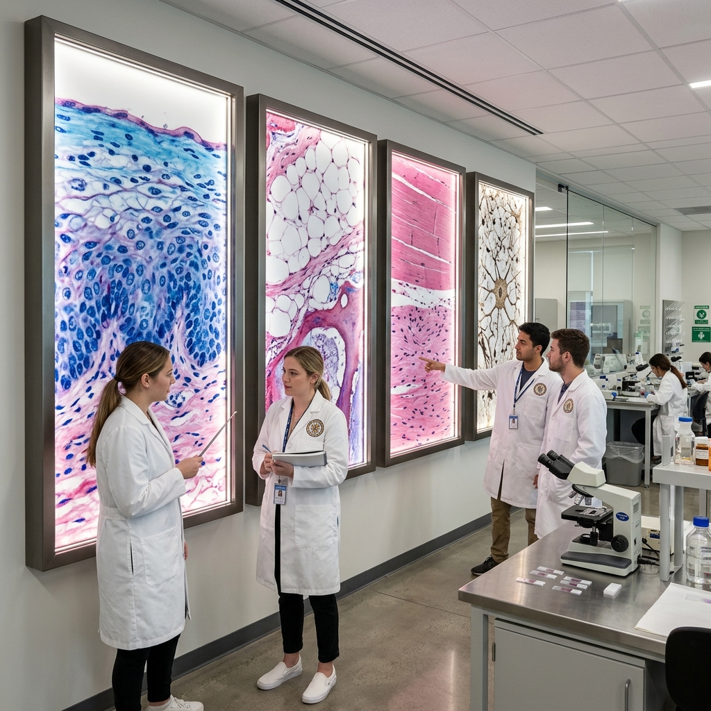
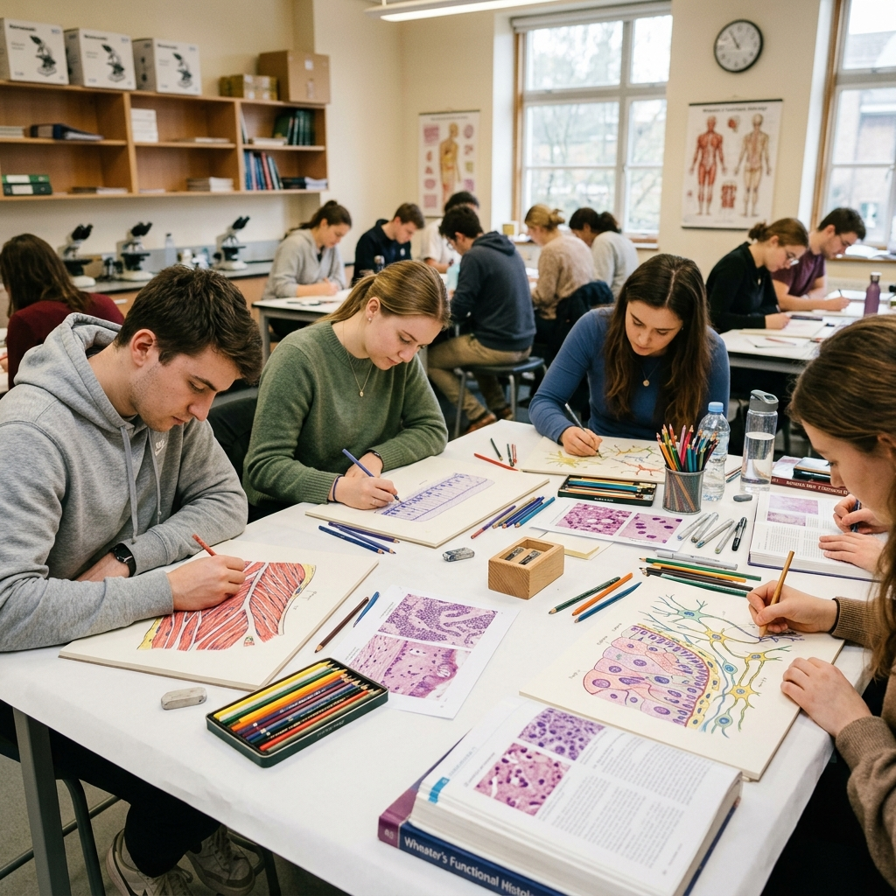
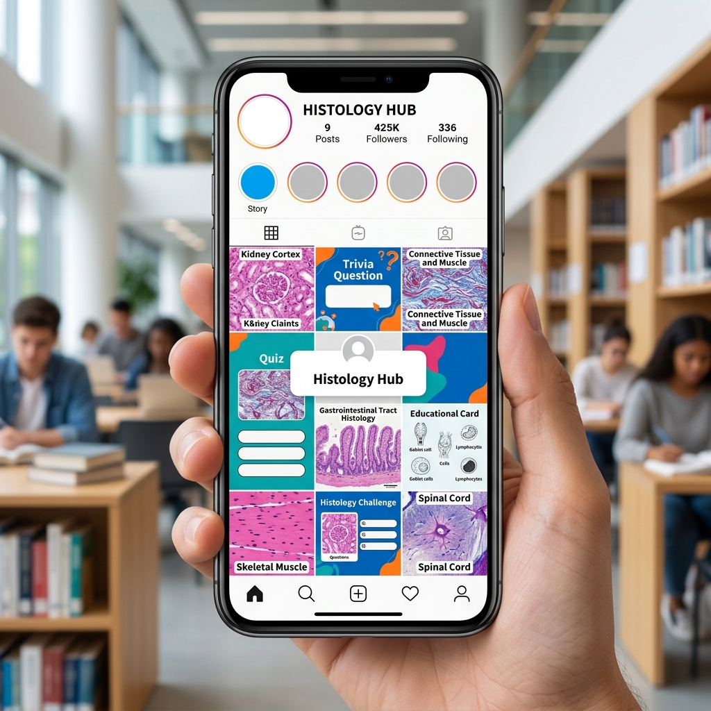
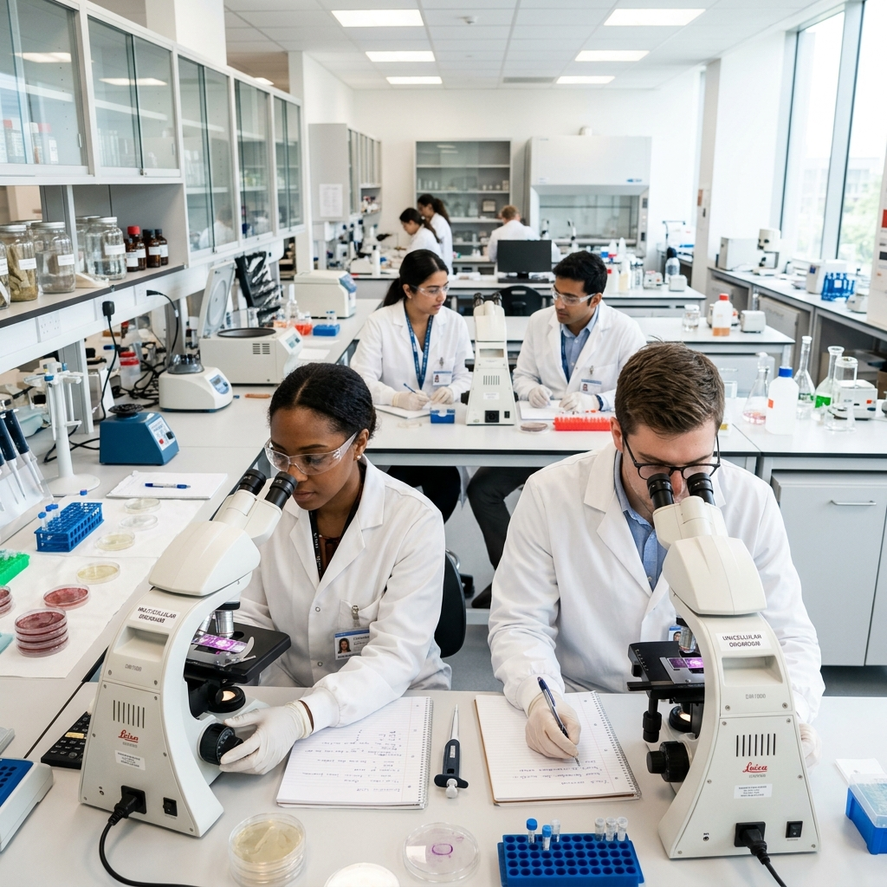
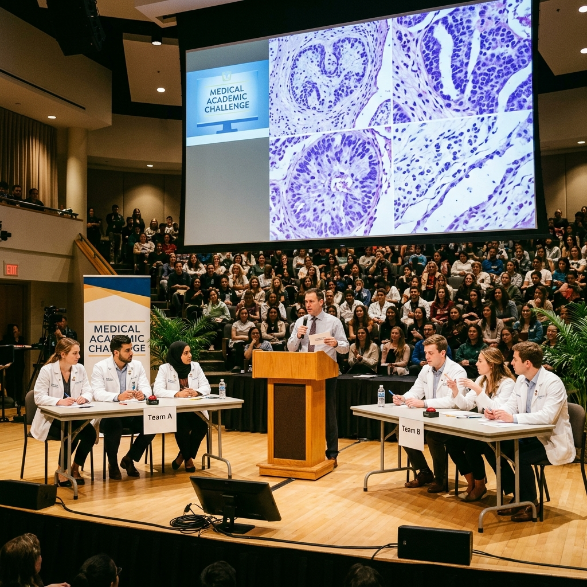
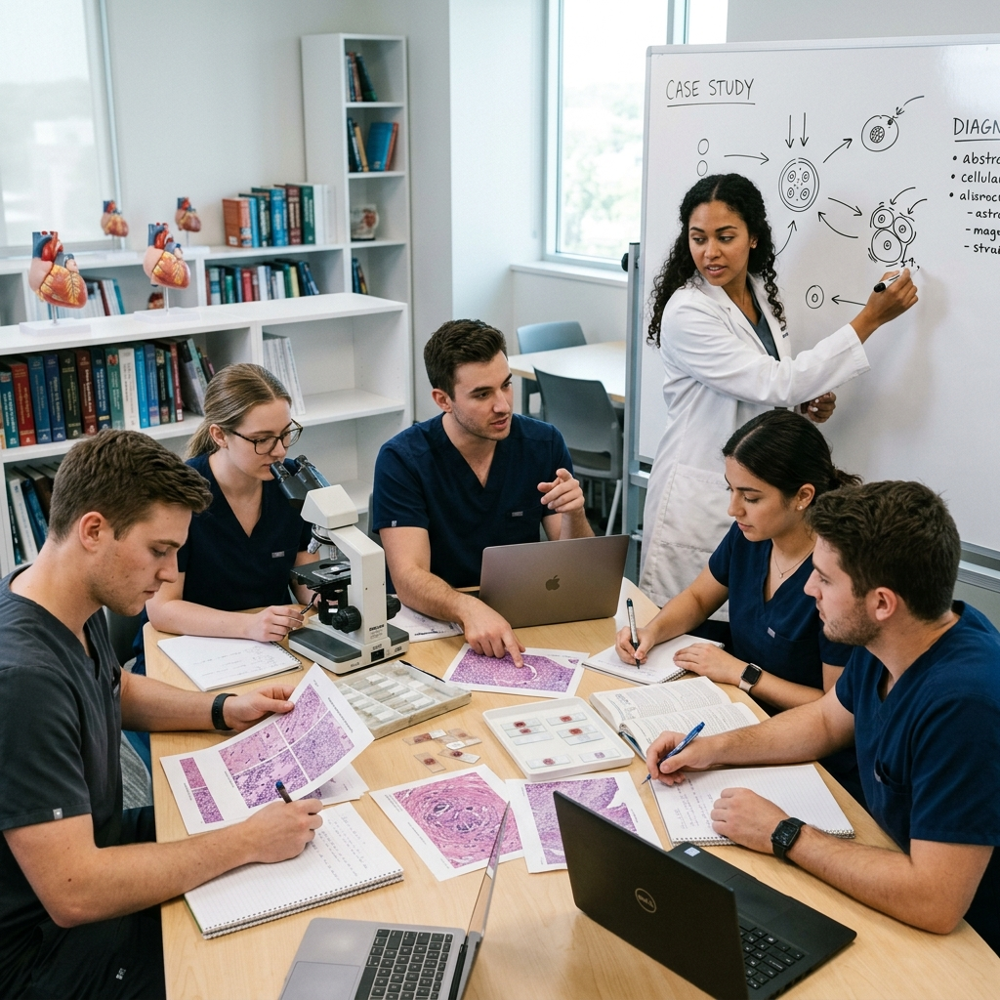
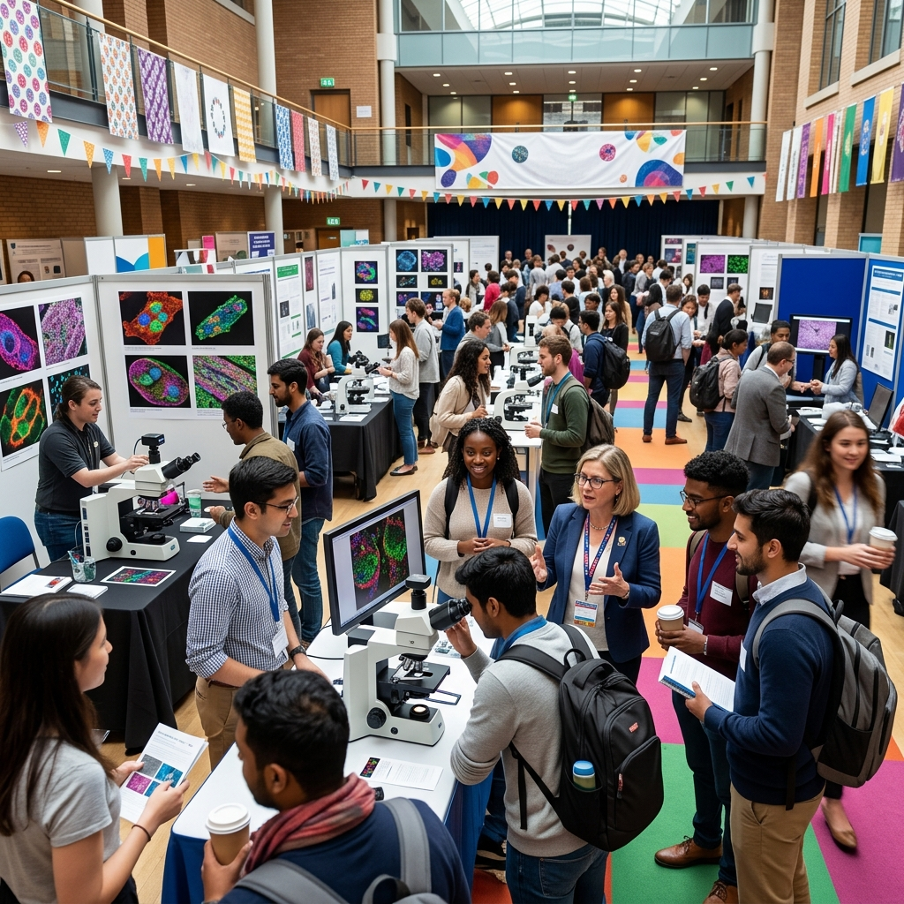

Un mural en el laboratorio de histología donde el estudiante pueda ver fotografías de los tejidos, etapas embrionarias y malformaciones genéticas con sus explicaciones detalladas.

Estudiantes elaborando en papel sus propios atlas de histología, combinando el aprendizaje manual con recursos digitales interactivos.

Una cuenta institucional manejada con los estudiantes donde se publican imágenes histológicas del día, datos curiosos y preguntas de trivia. Hace visible la asignatura más allá del aula.

Sesiones regulares donde los estudiantes observan y diferencian organismos unicelulares y pluricelulares, identifican las partes de la célula y realizan actividades con muestras reales.

Competencia entre estudiantes con rondas de preguntas, identificación de imágenes al microscopio y casos clínicos, fomentando el estudio con motivación y sana competencia.

Grupos de estudiantes reciben un caso clínico real con imágenes histológicas y deben diagnosticar, discutir y presentar sus conclusiones como si fueran un equipo médico.

Un evento por lapso de una semana con exposiciones, demostraciones en vivo, concursos de fotografía microscópica y charlas abiertas a toda la facultad, posicionando la asignatura como referente académico.